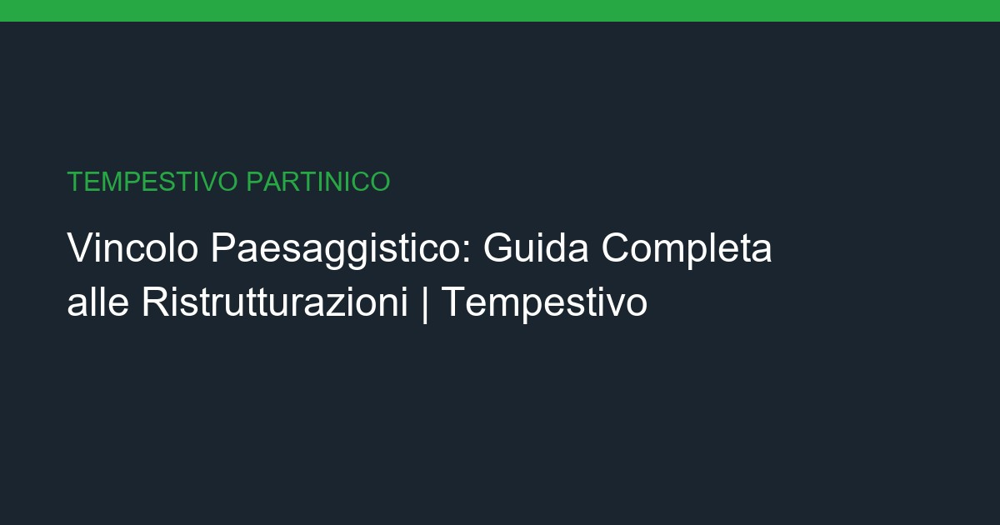

Ristrutturazione in Vincolo Paesaggistico: La Guida Completa

Operare in zone vincolate e di pregio a Partinico richiede il rispetto di severe normative. Ecco come muoversi senza blocchi del cantiere.
📋 Cos'è l'Autorizzazione Paesaggistica?
⚠️ Le Criticità che Gestiamo Noi
È un atto obbligatorio rilasciato per qualsiasi intervento che modifichi l'aspetto esteriore di fabbricati ricadenti in aree sottoposte a tutela paesaggistica.
- Tempi della Soprintendenza: Possono variare da 30 a 90 giorni. Tempestivo gestisce l'iter tecnico preventivo.
- Materiali Compatibili: Utilizzo di finiture e infissi conformi alle prescrizioni paesaggistiche locali.
- Tutela Ambientale: Attenzione massima agli scarichi, alla gestione dei rifiuti e al rispetto dell'ambiente locale.
✅ La Nostra Esperienza nei Vincoli
❓ Domande Frequenti
Conosciamo a fondo le peculiarità normative del territorio di Partinico e Palermo, garantendo un servizio chiavi in mano sicuro e a norma di legge.
Cos'è l'autorizzazione paesaggistica?
L'autorizzazione paesaggistica è un atto obbligatorio rilasciato dalla Soprintendenza o dagli enti competenti. Serve per qualsiasi intervento che modifichi l'aspetto esteriore dell'immobile in aree tutelate.
Quanto tempo serve per ottenere l'autorizzazione?
I tempi medi sono di 30-90 giorni. Noi presentiamo la pratica con anticipo e seguiamo l'iter personalmente per minimizzare i tempi d'attesa.
Quali materiali sono compatibili con il vincolo?
Materiali tradizionali e locali: infissi in legno o alluminio effetto legno certificato, intonaci tradizionali a calce, coperture in coppi siciliani.
🔗 Approfondimenti Correlati
- → Bonus Ristrutturazioni Sicilia 2026
- → Ristrutturazione Centro Storico
- → Tutti i servizi a Partinico